|
CodHer I partcipated in She Innovates 2019 Hackathon where my team came up with CodHer(). CodHer() is a fun computer game designed specifically for young girls to get them interested in technology as a field. my team won the first prize for this project. We turned this into a business idea later on. You could visit theCodHer() website to learn more about our idea. You can also visit myCodHer() Github repo to learn about this project in detail. |
| 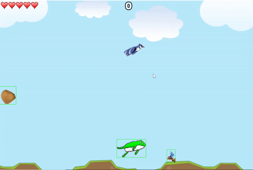 |
Crappy Birds Crappy Birds is one of my game inventions. I worked on this game project during my OOP class in 2016. Crappy Birds in a fun, single-level game based on a frog who has to save himself from the crappy birds and make his way to the bee hive. This game is made in C++ and SDL 2.0. Kindly visit myCrappy Birds Github repo to learn about this project in detail. |

|
Escape The Room This is a web game I made during my 'Composing Digital Media' class in 2019. This game is made using the Twine Software and CSS. It is a text-based game based on the story of a person who gets stuck in a desserted, old house. The player has to look for clues to find their way out. Kindly visit myEscape The Room Github repo to learn about this project in detail. |
| 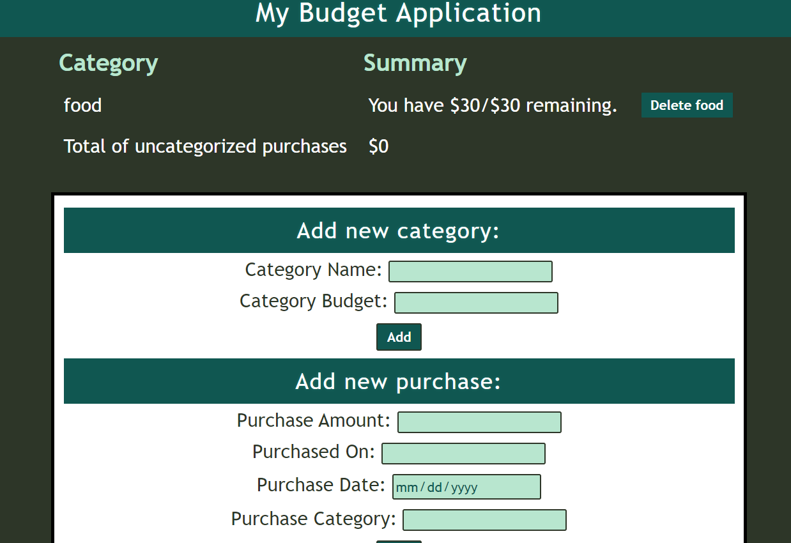 |
Budget Manager This is a web application I made during my 'Web Applications' class, a RESTful application made using Flask, JavaScript, HTML5, CSS and, AJAJ. It helps the user to keep track of his/her budget and expenses for each month. Kindly visit myBudget App Github repo to learn about this project in detail. |
| 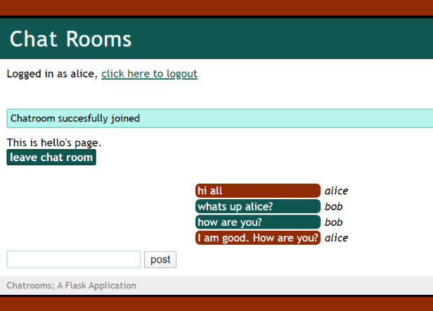 |
Chatroom Web Application This is another web application that I made during my 'Web Applications' class. The users can sign-up and login using their credentials. A user can create and join any chatroom at a time but can only delete the ones that are created by him/her. The application is made using Flask, JavaScript, HTML5, CSS, AJAJ as well as SQL Alchemy to store the information about the users and chatrooms in a backend database. Kindly visit myChatroom Github repo to learn about this project in detail. |
| 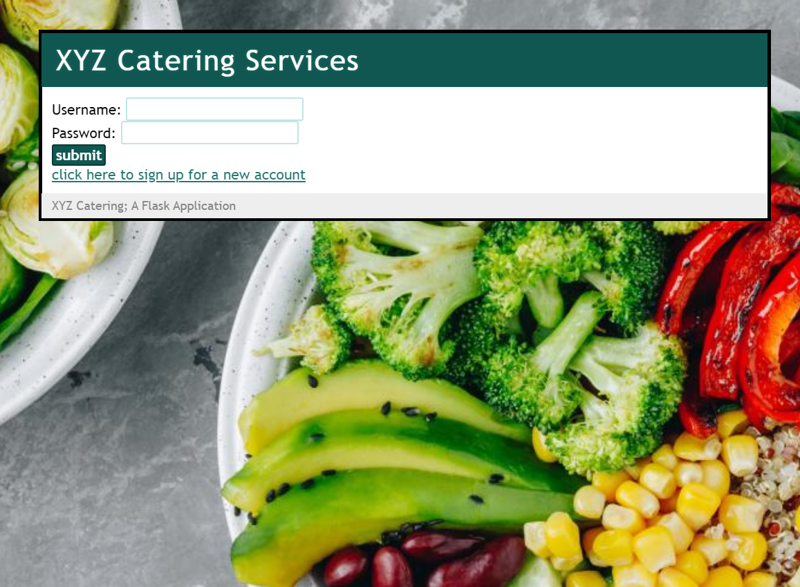 |
Catering Service Website This is another web application that I made during my 'Web Applications' class. It is basically a website for catering company to help them manage their events. It has 3 different kinds of users, owner, staff member and, customer. The application is made using Flask, JavaScript, HTML5, CSS as well as SQL Alchemy to store the information about the users and events in a backend database. Kindly visit myCatering Service Github repo to learn about this project in detail. |
| 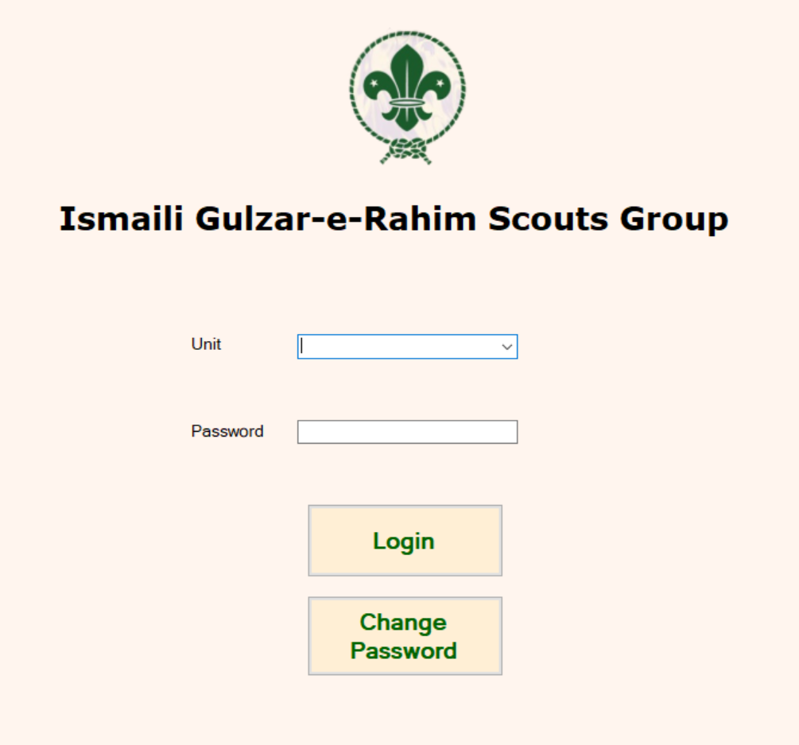 |
Gulzar-e-Rahim Database Application This is a database application for Gulzar-e-Rahim Boys Scouts school that I worked on during my 'Database Management' class in 2017. The back-end database is made using SQL and Microsoft SQL Server. The front-end(GUI) is made in C#. Kindly visit myDatabase Github repo to learn about this project in detail. |
| 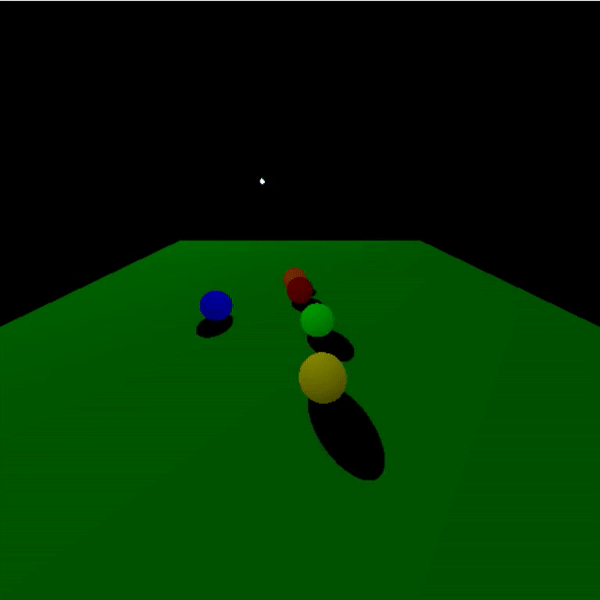 |
Lighting Simulation This is a simulation of lighting and shadows which I created as part of my coursework in my 'Computer Graphics' class in 2018. This simulation is created using the fake shadow model the OpenGL library in C. Kindly visit myLighting Github repo to learn about this project in detail. |

|
Maze Solver Simulation This is a simulation of a maze solver which I created as part of my coursework in my 'Computer Graphics' class in 2018. It is based on the view and projection matrices. This simulation is created using OpenGL library in C. Kindly visit myMaze Solver Github repo to learn about this project in detail. |
| 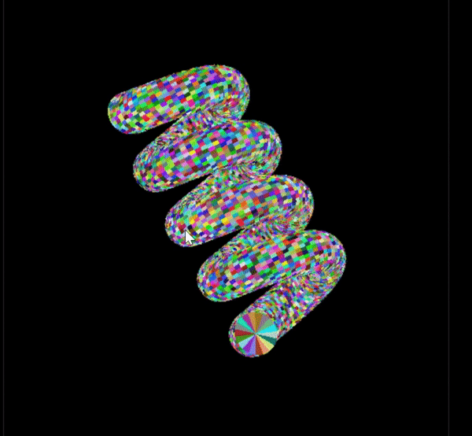 |
3D object Transformation This is a Computer Graphics project showing the transformation, i-e; scaling and rotation of a 3D spiral. I created this during my 'Computer Graphics' class using OpenGL library in C. Kindly visit myTransformation Github repo to learn about this project in detail. |
| 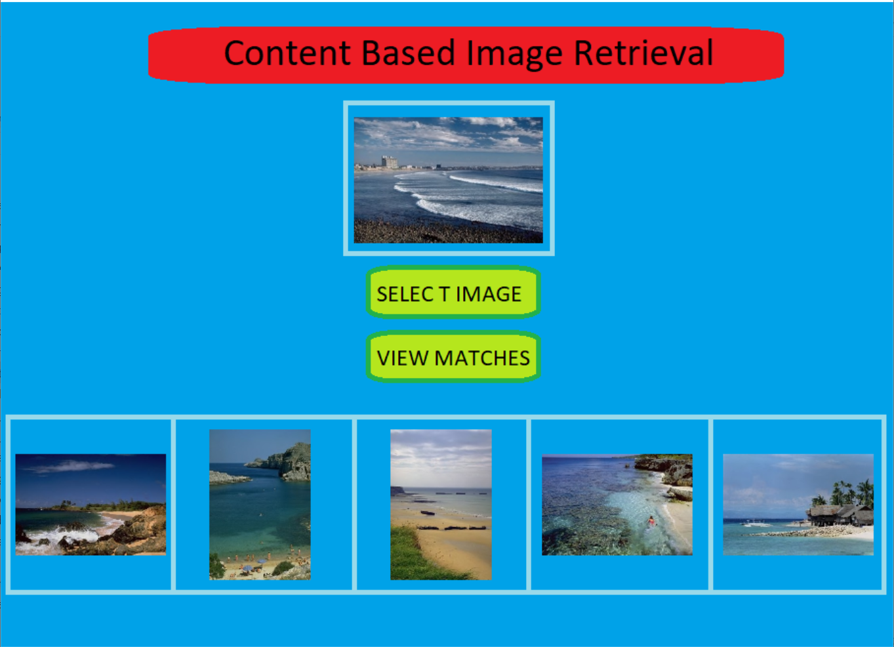 |
Content Based Image Retrieval This is another AI-powered application in Python which I worked on during my 'Computer Vision' class in 2018. For this project, we used a pre-trained 'Keras' neural network and applied it on 'imagenet' dataset to extract features and get the matching set of images. Kindly visit myCBIR Github repo to learn about this project in detail. |
| 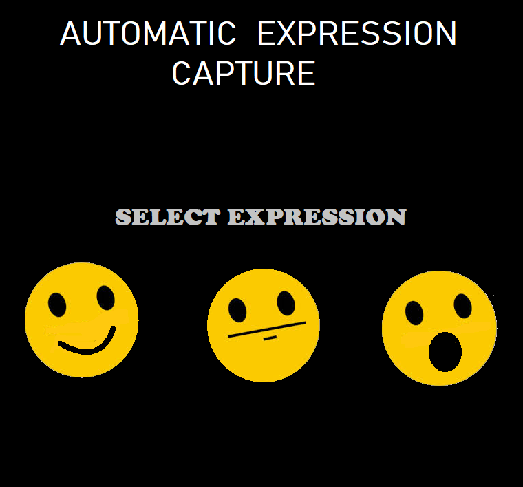 |
Automatic Expression Capture This is one of my AI projects. I worked on it during my 'Intro to Aritifical Intelligence' class. It is an AI-powered program which automatically captures photos based on an expression selected by the user. This program is made in Python using Tensorflow neural network model. Kindly visit myAutomatic Expression Capture Github repo to learn about this project in detail. |
| 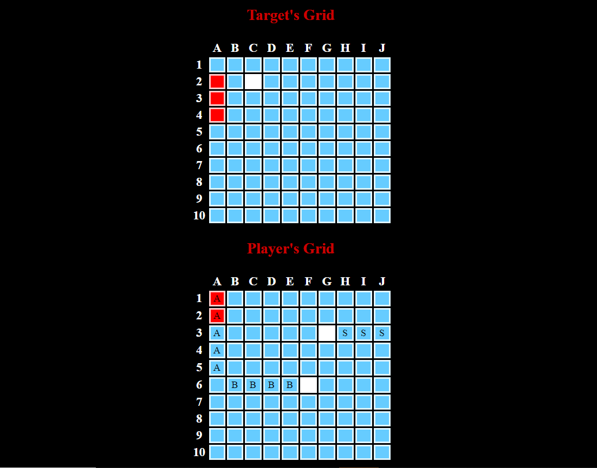 |
Battle Ship BattleShip is a simple web-based, 2-player game which I made using HTML, CSS and, JavaScript during my 'Web Applications' class in 2019. The player can see their placement in the Player's grid and can click any cell in the Target's grid to hit the opponent's ships. The player who hits all the ships of the opponent, wins! Kindly visit myBattle Ship Github repo to learn about this project in detail. |
| 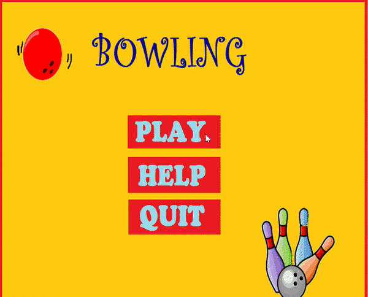 |
Bowling Bowling is a simple desktop game made in Python using it's Pyglet library. It was a class project I worked on in 2016. Kindly visit myBowling Github repo to learn about this project in detail. |
| 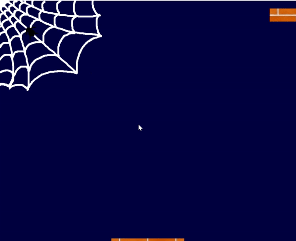 |
Stacks Stacks is a simple desktop game made in Python using it's Pyglet library. It was a class project I worked on in 2016. Kindly visit myStacks Github repo to learn about this project in detail. |